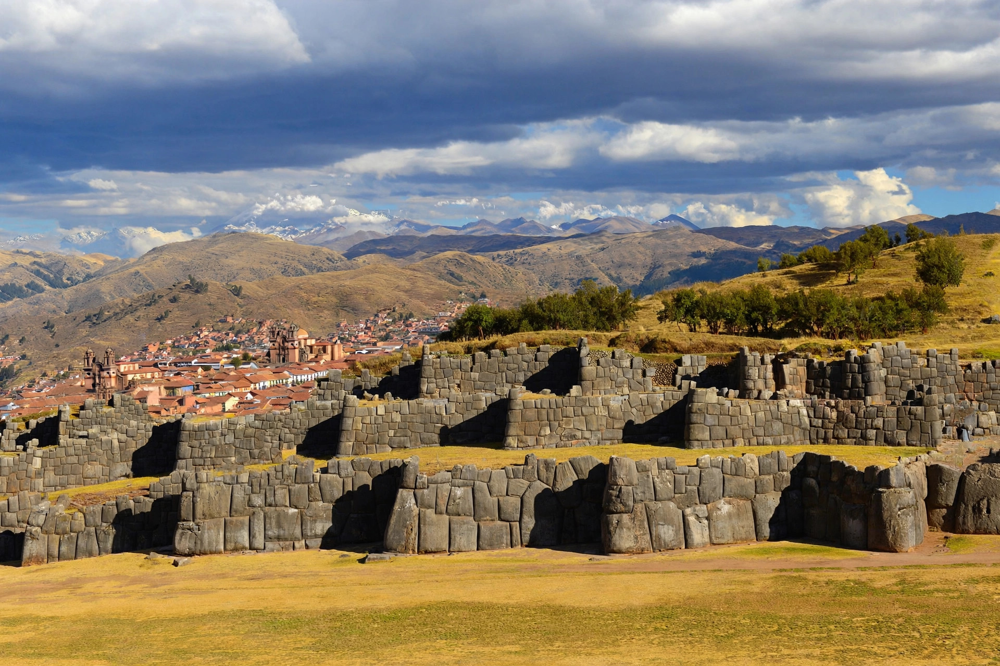

| Sacsayhuamán | |
|---|---|
| Location | Cusco, Peru |
| Culture | Inca (begun under Pachacuti, 15th century) |
| Coordinates | 13°30′28″S 71°58′56″W |
| Status | Part of UNESCO World Heritage Site of Cusco (1983) |
Sacsayhuamán (Quechua: Saqsaywaman, from saqsay, "satisfied", and waman, "falcon") is a citadel on the northern outskirts of the city of Cusco, Peru, the historic capital of the Inca Empire. The complex was built by the Inca in the 15th century, particularly under Pachacuti and his successors. Its dry stone walls are composed of huge, precisely fitted boulders — some weighing well over 100 tons — cut and assembled without mortar so tightly that not even a blade can be inserted between them.
The most striking feature is a series of three parallel zigzag walls on the side facing the city, traditionally interpreted as the teeth of a puma — Cusco itself was said to be laid out in the shape of the animal, with Sacsayhuamán as its head. On the hilltop stood three towers, of which the circular Muyuq Marka's foundations survive, together with reservoirs, storehouses, and a great open esplanade. Whether the site was primarily a fortress, a ceremonial centre, or both has long been debated; chroniclers describe it as a "house of the sun" and royal estate as well as a stronghold.
Construction probably began under Pachacuti (r. 1438–1471) and continued for decades, employing tens of thousands of labourers under the mit'a corvée system. In 1536, during Manco Inca's great rebellion, Sacsayhuamán was the scene of fierce fighting as Inca forces attempted to retake Cusco from the Spanish; the battle, in which the Inca captain Cahuide famously leapt from a tower rather than surrender, ended in Spanish victory. Afterwards the site was used as a quarry for colonial Cusco, which accounts for the loss of its smaller stones. Today the esplanade hosts the Inti Raymi festival of the winter solstice each 24 June.